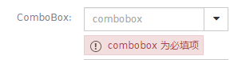
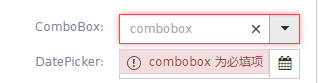

Kendo UI Validator
简介：kendoui 验证的基本格式
Kendo UI 提供两种验证方式，一种为表单验证，一种为表格验证。
表单验证
//html代码
<form class="form-horizontal" id="form1">
<div class="form-group">
<label class="col-sm-2 control-label">TextBox:</label>
<div class="col-sm-4">
<input type="text" name="userId" required validationMessage="Enter {0}" id="maskedtextbox" data-role="maskedtextbox" data-bind="enabled: isEnabled, value:data.userId" style="width:100%" class="k-textbox">
</div>
<script>
kendo.bind($('#maskedtextbox'), viewModel);
</script>
<label class="col-sm-2 control-label">ComboBox:</label>
<div class="col-sm-4">
<input id="combobox" name="combobox" required placeholder="combobox" data-role="combobox" data-value-primitive="true" data-text-field="text" data-value-field="value" data-bind="enabled: isEnabled, source: comboboxSource, value:data.productId" style="width: 100%;"/>
</div>
<script>
kendo.bind($('#combobox'), viewModel);
</script>
//表单验证这里<span>标签用来决定验证信息出现的位置
<span class="k-invalid-msg" data-for="combobox"></span>
</div>
</form>
//js代码
var errorTemplate = '<div class="k-widget k-tooltip k-tooltip-validation"' + 'style="margin:0.5em"><span class="k-icon k-warning"> </span>' + '#=message#<div class="k-callout k-callout-n"></div></div>'
var validator = $("#form1").kendoValidator({
valid: function (e) {
console.log('valid')
},
//验证样式 默认为default
invalidMessageType : "tooltip",
//自定义错误模板
errorTemplate: errorTemplate
}).data("kendoValidator");
invalidMessageType用法：
1.表单默认样式验证("default")

2.表单自定义样式验证("tooltip")

区别：自定义样式验证会将验证信息变成tip，当鼠标移入浮现，移出消失，并且边框会变红
表格验证
//dataSource
model:{
id:"resourceId",
field:{
url: {
//这里也要validation 保存时会验证每个字段
validation: {
required: true,
//可以自定义函数，每次验证时会调用
test:function(e){
}
}
}
}
}
//grid
{
field: "url",
title: '<@spring.message "resource.url"/>',
width: 250,
editor: function (container, options) {
//注意required 这里是用来验证的
$('<input required name="' + options.field + '"/>').appendTo(container).kendoMaskedTextBox({});
}
}
注意:
$('<input required name="' + options.field + '"/>').appendTo(container).kendoMaskedTextBox({});
//其中data-msg(data-required-msg) 或者 validationMessage可以写自定义验证信息
参考: http://docs.telerik.com/kendo-ui/api/javascript/ui/validator